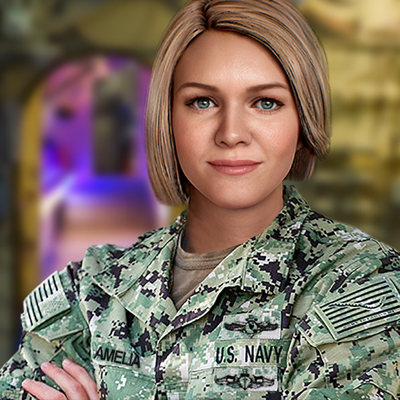

US Navy to Test AI-Powered Virtual Assistant for Crews - Defense One

As the US Navy continues to explore innovative ways to enhance the capabilities of its ships and crews, the development of an artificial intelligence (AI)-powered virtual assistant is set to revolutionize how naval operations and training are conducted.
Story of the AI-Powered Virtual Assistant
The idea behind the AI-powered virtual assistant originated from the need to provide a more efficient and effective way for naval crews to access information and perform various tasks while on board. With the help of AI technology, the virtual assistant is expected to provide real-time support and guidance, allowing sailors to focus on critical operations and decision-making.
One of the key features of the virtual assistant is its ability to understand natural language commands and questions, making it easier for sailors to interact and receive information. Furthermore, the system will be designed to learn and adapt to each user's specific needs and preferences over time, allowing for a more personalized experience.
The AI-powered virtual assistant is currently in the testing phase, with several pilots planned for the near future. These pilots will focus on evaluating the system's performance and functionality, as well as identifying potential areas for improvement and enhancement.
Examples of AI-Powered Virtual Assistants in Other Fields
The use of AI-powered virtual assistants is not limited to naval operations, as many other industries have also incorporated similar technologies to improve efficiency and productivity.
- Healthcare: Medical professionals have been using virtual assistants to assist with administrative tasks such as scheduling appointments and updating patient records.
- Retail: Virtual assistants have been utilized by retailers to provide personalized customer support, as well as to streamline ordering and delivery processes.
- Finance: Financial institutions have implemented virtual assistants to provide customers with real-time investment advice and market information.
Conclusion - Benefit of using an AI-Powered Virtual Assistant in Naval Industry
- Increased efficiency and productivity: The AI-powered virtual assistant is expected to significantly reduce the time and effort required for sailors to access information and perform tasks, allowing for a more efficient and productive work environment.
- Improved decision-making and situational awareness: The virtual assistant will provide real-time support and guidance, allowing sailors to make faster and more informed decisions based on current data and information.
- Enhanced training and education: The system's ability to learn and adapt to each user's specific needs and preferences will provide a more personalized and effective training experience, helping sailors to improve their skills and knowledge.
Reference URLs
Hashtags
- #USNavy
- #AIPoweredVirtualAssistant
- #NavalOperations
- #EfficientCrews
- #EnhancedTraining
- #PersonalizedExperience
SEO Keywords
- US Navy
- AI-Powered Virtual Assistant
- Naval Operations
- Efficient Crews
- Enhanced Training
- Personalized Experience
Article Category
Technology
Curated by Team Akash.Mittal.Blog
Share on Twitter Share on LinkedIn